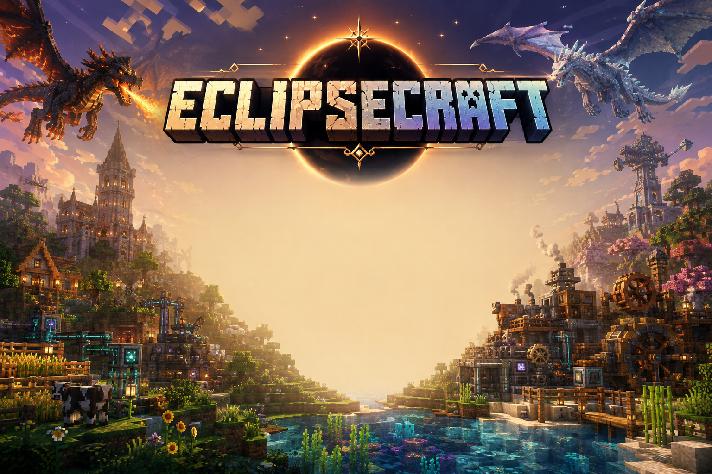

Zatmění zahalilo svět. Řemeslo, magie a stroje se probouzejí za soumraku.
Stáhnout EclipseCraft.zipCelý postup zabere pár minut. Postupuj krok za krokem.
Pokud ho ještě nemáš, stáhni si ho z oficiálního webu tlauncher.org a spusť ho alespoň jednou, ať se vytvoří jeho herní složka.
Klikni na tlačítko nahoře na stránce. Soubor má kolem 650 MB, takže stažení chvíli potrvá.
Pravým tlačítkem na EclipseCraft.zip → Extrahovat vše…. Vznikne složka EclipseCraft s podsložkami mods, config, saves, shaderpacks a dalšími.
V TLauncheru klikni na ozubené kolečko vedle profilu → Otevřít herní adresář (obvykle %appdata%\.minecraft na Windows).
Otevři rozbalenou složku EclipseCraft a přesuň celý její obsah (nikoliv celou složku samotnou) do herního adresáře. Přepiš existující soubory, pokud se na to zeptá.
V TLauncheru vytvoř nový profil pro Minecraft 1.20.1 s Forge a jako herní adresář nastav tu, kam jsi zkopíroval soubory.
Klikni na Hrát. Při prvním spuštění může načtení trvat déle, protože se natahují všechny módy a shadery.
Pro přehled — takhle vypadá obsah po rozbalení.
Stáhni si EclipseCraft a vydej se do světa, kde se magie potkává se stroji.
Stáhnout EclipseCraft.zip